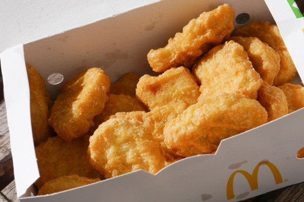

Odin Recipes
Mcdonalds Chicken Nuggets
Mcodnalds Chicken Nuggets

Description
These copycat McDonalds Chicken Nuggets are so similar to those at their restaurants that you would think its the real thing. They are delicious and the perfect hunger-buster!
Ingredients
- 3 chicken fillets, boneless, skin removed and diced
- 1 ½ teaspoons salt
- 2 large eggs
- 1 ½ cups corn starch, divided
- 1 cup water
- 1 tablespoon onion powder
- 1 tablespoon garlic powder
- 2 tablespoons yellow mustard
- 1 teaspoon ground black pepper
- 1 cup all-purpose flour
Steps
- Place the chicken in a food processor with the salt and one egg. Blend until it forms a paste-like consistency.
- In a shallow bowl or container, place the corn starch. Using wet hands, take a handful of blended chicken and shape into a nugget. Cover the nugget with corn starch, shake off the excess and place on a parchment paper-lined baking sheet. Finish shaping and coating the nuggets before moving on to the next step.
- In a large bowl, whisk together the water, one egg, mustard, garlic and onion powder, ground pepper and all-purpose flour. You should have a thick but runny batter. Place one nugget at a time in the batter and place it back onto the lined baking sheet.
- lace the tray in the freezer and allow them to freeze for 1 hour.
- Heat your oil to 350 degrees Fahrenheit. Deep fry the first batch for 5 minutes. Allow the chicken nuggets to drain on paper towel for 3-4 minutes. Deep fry the same batch again for 5 minutes. This ensures that the chicken cooks all the way through without getting too dark.
- Serve these nuggets warm with any dipping sauce.
Saigon Noodle Salad>